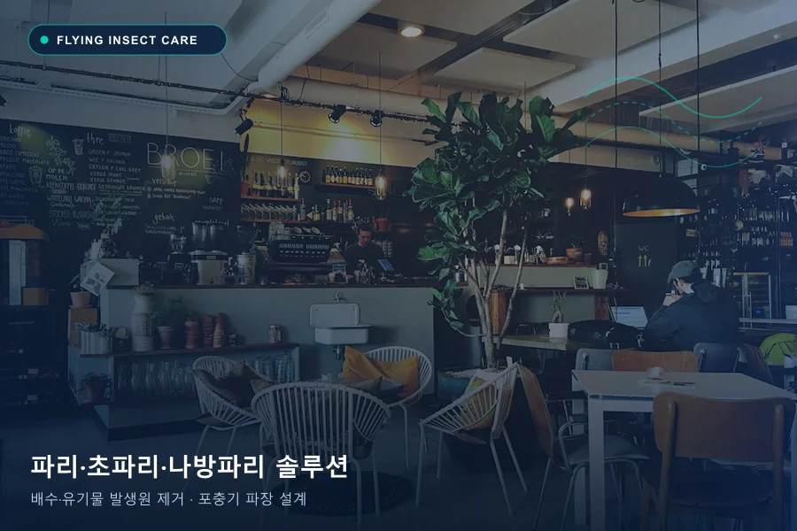

비래해충(날벌레) 관리는 출현하는 파리의 종류를 정확히 구별하고 알·유충이 자라는 발생원을 제거하는 것이 핵심입니다. 화장실·배수구 유기물 슬러지에서 우화하는 나방파리, 발효된 음식물·음료 잔여물에 산란하는 초파리, 음식부패취와 온도차를 따라 외부에서 들어오는 집파리를 구분해 유충구제·환경개선·포충기 배치를 함께 설계합니다.
파리·초파리·나방파리 3W 발생 원인 및 서식 단계 기준
눈에 보이는 개체 수만으로 번식 규모를 단정하기보다 왜 유인되는지(Why), 어디로 들어와 숨는지(Where), 언제 활동하는지(When)와 관찰 빈도를 함께 대조해야 정확한 방제 범위를 정할 수 있습니다.
| 3W 분석 항목 | 파리·초파리·나방파리 현장 확인 내용 |
|---|---|
| Why · 유인·발생 요인 | 배수관 내부 유기물 슬러지(나방파리), 과일·음료·음식물 쓰레기 발효취(초파리), 음식부패취→실내외 온도차(집파리)가 종류별 핵심 유인·발생 요인입니다. |
| Where · 침입·서식 지점 | 화장실·주방 바닥 배수구와 그리스트랩·정화조(나방파리), 쓰레기통·음료 디스펜서·커피머신 하부(초파리), 주 출입문·하역장 도어·외부 폐기물장(집파리). |
| When · 주요 활동 시점 | 습도가 높거나 아침 첫 출근 시 배수구 벽면에 붙어 있거나(나방파리), 조리·마감 전후 및 출입문 개폐 시간대에 활동과 유입이 급증합니다. |
파리·초파리·나방파리 관찰 마릿수·징후에 따른 1~3단계 서식 판별 기준
| 서식 단계 | 관찰 빈도 및 징후 | 현장 상태 해석 |
|---|---|---|
| 1단계 · 초기 유입·발생 단계 | 눈앞이나 벽면에 3~5마리 내외 간헐적 목격 | 출입문 개폐 시 외부에서 일시 유입되었거나 배수구 트랩·소량의 잔여물에서 막 발생하기 시작한 단계입니다. |
| 2단계 · 실내 서식·유입 확산 | 배수구 벽면·쓰레기통 주변에 10마리 내외 반복 목격 | 배수로 내부 슬러지, 조리기기 하부 유기물, 외곽 폐기물장 등에 산란처가 형성되어 자체 번식 중인 단계입니다. |
| 3단계 · 대량 서식 단계 | 5일 이상 지속적으로 20마리 내외 다수 출현 | 지하 정화조·집수정·배수관 심부 또는 주방 하부 전반에 유충·번데기가 퍼져 유충구제와 포충기 설계가 동시에 필요한 단계입니다. |
나방파리 · 초파리 · 집파리 3종 발생원 및 맞춤 방제 비교
| 구분 | 주요 발생원 및 유인 요인 (Why) | 핵심 점검 지점 (Where) | 에코플랜 맞춤 방제 공법 |
|---|---|---|---|
| 나방파리 (하수구 날파리) | 배수관·트랩·정화조 내부의 머리카락·기름때·유기물 슬러지(생물막) | 화장실 바닥 배수구, 주방 트렌치·그리스트랩, 세면대 오버플로우, 지하 정화조 | 유기물막 물리적 세척 가이드 + 배수구·정화조 유충구제제·CS제제 적용 + 트랩 차단 및 포충기 배치 |
| 초파리 · 벼룩파리 | 과일 껍질, 음료 시럽, 주류 잔여물, 음식물 쓰레기의 발효·부패취 | 음식물 쓰레기통, 음료 디스펜서·제빙기 하부, 빈 병 보관함, 주방 걸레·배수구 | 숨은 발효·부패 산란처 탐색·원천 제거 + 유충·성충 동시 처리 + 매장 동선별 포충기 설치 |
| 집파리 · 대형 파리 | 음식부패취 → 실내외 온도차 및 외부 쓰레기장 유기물 유인 | 매장 주 출입문, 하역장 개방 도어, 파손된 방충망, 외부 폐기물 수거함 | 출입구 유입 차단(도어클로저·방충망 점검) + 외곽 유인원 약제 처리 + 출입구 동선 포충기 설계 |
파리·초파리·나방파리 발생 의심 신호와 서식 흔적
- 화장실이나 주방 타일 벽면에 하트 모양 날개의 작은 날벌레(나방파리)가 가만히 붙어 있습니다.
- 음식물 쓰레기통, 음료 제조대, 싱크대 주변에서 작은 초파리가 떼 지어 날아다닙니다.
- 출입문을 여닫는 영업·하역 시간대에 대형 파리가 실내로 계속 들어옵니다.
파리·초파리·나방파리 방제를 위한 현장 핵심 점검 지점
- 화장실·주방 배수구 거름망과 트랩 내부의 유기물 슬러지 및 정화조 환기 배관
- 쓰레기통 하부, 음료 디스펜서·커피머신 아래, 재활용 빈 용기 보관 구역
- 출입문 개방 시간, 방충망 틈새, 건물 외부 폐기물 보관 장소와의 거리
파리·초파리·나방파리 상담 전 직접 할 수 있는 환경 관리 및 주의사항
- 음식물 쓰레기와 빈 음료 용기는 뚜껑을 밀폐해 자주 비우고 상온에 과일·잔여물을 방치하지 않습니다.
- 접근 가능한 배수구 거름망과 트랩 내부의 끈적한 유기물막(슬러지)을 긴 솔과 세정제로 문질러 닦아냅니다.
- 뜨거운 물만 붓는 방법은 배수관 손상 위험이 있고 깊은 곳의 알·유충까지 제거하기 어려우므로 반복 발생 시 유충 서식원을 점검받으세요.
에코플랜의 파리·초파리·나방파리 맞춤 방제 공법과 사후 관리
현장에서 포획·관찰된 파리의 종류를 동정해 실내 자체 번식(배수구·주방 산란처)과 외부 유입(출입문·하역장)을 구분합니다. 유충구제제와 성충구제제·CS(캡슐)제제를 발생원에 맞게 적용하고, 조도와 식품 노출 동선을 고려해 SMART CATCH 등 유인 포충기 위치와 관리 주기를 설계합니다.
방문 횟수와 주기는 현장 조사와 모니터링 결과를 바탕으로 협의합니다. 공간 면적, 시설 구조, 발생 단계(1~3단계), 작업 범위에 따라 견적이 달라지며 한 번의 작업만으로 모든 재유입이 영구 차단되는 것은 아니므로 환경개선과 사후 점검을 함께 안내합니다.
파리·초파리·나방파리 방제 자주 묻는 질문
화장실 나방파리는 살충제를 뿌리거나 뜨거운 물을 부으면 없어지나요?
날아다니는 성충만 약으로 잡거나 뜨거운 물만 부어서는 배수관 깊은 곳과 정화조 슬러지 속에 숨은 알·유충(애벌레)을 완전히 제거하기 어렵습니다. 배수 트랩의 유기물막 청소와 유충구제제 처리, 배수구 트랩 차단을 병행해야 재발을 줄일 수 있습니다.
매장에 포충기만 설치하면 파리·초파리가 모두 해결되나요?
포충기는 실내로 유입되거나 우화한 성충을 UV LED·BL램프 파장으로 유인해 포획하고 발생 추이를 모니터링하는 장비입니다. 배수구·음식물 잔여물 같은 산란처 제거와 출입구 유입 차단을 함께 진행해야 근본적인 개체 수가 줄어듭니다.
음식점·카페에서 포충기는 어디에 설치하는 것이 좋나요?
조리대나 식기·식품 위쪽에 바로 설치하면 포획 과정에서 위생 문제가 생길 수 있고, 유리창 바로 옆에 두면 외부 해충을 유인할 수 있습니다. 출입구 동선과 바닥 높낮이, 주변 조명 밝기를 확인해 식품 노출 구역과 이격된 벽면에 설치합니다.
• 작성·검토 주체: 주식회사 한국에코플랜 기술연구소 · 위해생물방제사 기술지원팀 (대표 김영태 · 고객센터 1688-4587)
• 최초 구성일: | 최종 개정·검수일:
• 참고 법령 및 1차 공공 기준: 환경부 초록누리(살생물제 승인기준) ↗ · 질병관리청 감염병 매개체 종합방제(IPM) 지침 ↗ · 한국식품안전관리인증원(HACCP 방충·방서 기준) ↗ · 감염병예방법 소독기준 ↗
• 공식 채널 확인: 에코플랜 공식 도메인(ecoplan.co.kr) ↗ · 스마트캐치 공식 네이버 스마트스토어 ↗ · 현장 맞춤 상담 신청